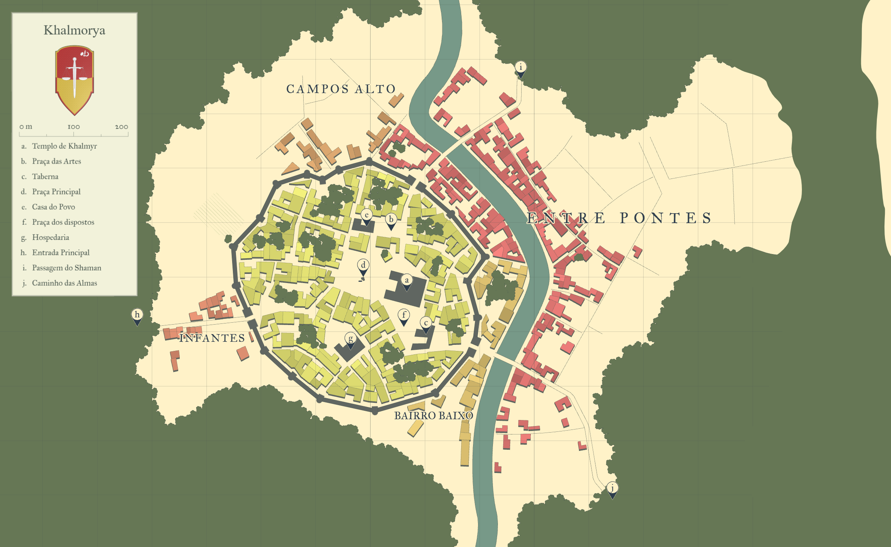

Vila de Khalmorya
Plot da História
Os tempos eram sombrios, os Devoradores de Arton vinham expandindo sua perversa dominação das vilas do norte, em cada lugar que passavam o cheiro de sangue fresco dominava os olfatos. A visão era assustadora, o ambiente tomado de fuligem não permitia saber se era dia ou noite mas ao fundo via se apenas morte, fogo, destruição e terror. As almas choravam naquele lugar.
Os sobreviventes eram escravizados e sob dominação de terror eram obrigados a fazer os piores serviços, aqueles que nem o mais desprezível dos Goblins faria, os Devoradores chamavam esses escravos de cavalos das trevas.
Do sul, os sete reinos reuniram seus melhores grupos de heróis e assim deu início a Sociedade de Khalmyr, a última esperança do mundo livre. A eles e somente a eles foi permitido portar a insígnia dos servos de Khalmyr e para que nenhum ímpio a porte a insígnia dos membros da Sociedade foi abençoada com magia anciã, assim só um outro membro da Sociedade se portando a sua insígnia reconhece outro membro verdadeiro.
Aos poucos eles começaram a ganhar espaço e impor derrotas aos Devoradores, um a um os líderes deles eram derrotados mas infelizmente o custo era pago com as vidas dos membros da Sociedade.
Um último grupo de heróis se deslocou para a Vila de Khalmorya onde rumores falavam que Malakor, o último líder vivo dos Devoradores de Arton, em um sopro de desespero faria um último ataque. Se a vila capitulasse os Devoradores conseguiriam se reorganizar e avançar sua dominação, agora já sem poder ser parada mas se Malakor fosse derrotado seria o fim dos avanços dos Devoradores.
Em uma batalha épica, os heróis defenderam a vila com seu próprio sangue. A batalha foi sangrenta, vários guerreiros morreram bravamente defendendo a vila. O número de órfãos crescia a cada segundo naquela vila, mas Malakor foi derrotado, os poucos sobreviventes voltaram para a vila bradando: “Por Valkaria, a guerreira que nunca será esquecida!”, e cantavam cantigas de eterna gratidão aos heróis.
Com a queda do último líder dos Devoradores a vida voltou a florescer no norte, os poucos exércitos remanescentes eram derrotados um atrás do outro, os últimos heróis da Sociedade de Khalmyr seguiram cada um sua vida, se separando em presença mas sempre ligados em espírito pelo terror que viveram durante a terrível guerra. Não queriam mais se aventurar, essa não era mais uma vida para eles, suas almas foram eternamente marcadas por cada vida perdida em batalha.
Uma espada com uma balança de dois pratos.
Significado: A espada simboliza a força dos heróis que é balanceada pela justiça e igualdade.
Mapa Interativo de Khalmorya
Clique em qualquer ponto da legenda para dar zoom e destacar o local exato com o anel pulsante vermelho:
